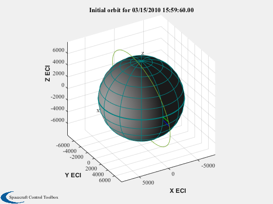
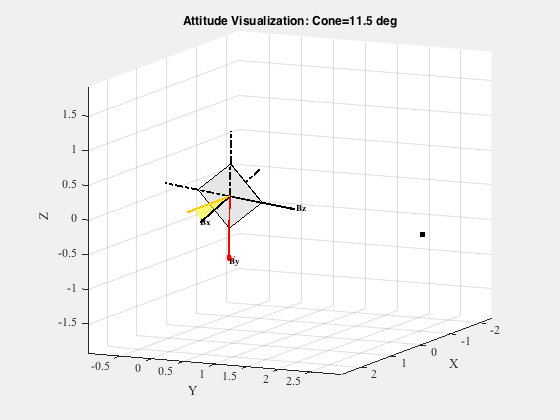
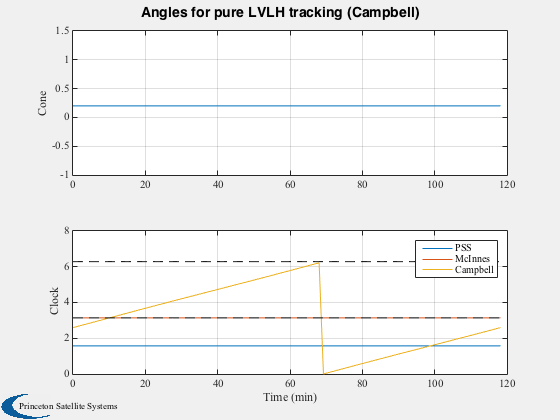
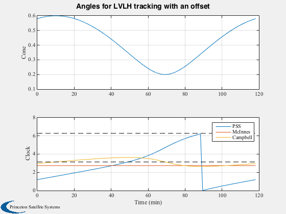

Earth-orbit sail analysis with sail aligned to LVLH.
The sail is in a dawn-dusk sun-synchronous orbit. The sail tracks the LVLH frame with fixed "yaw" offsets (rotation about the nadir vector). This script demonstrates the difference between sail angle definitions for a planet-centric orbit. Note in the last plot that the cone and clock angles for a fixed yaw offset are not constant due to the orbit geometry of the selected date.
Since version 7. ------------------------------------------------------------------------ See also: SunV2, UToConeClock, ClockConversion, Eul2Q, QForm, QLVLH, QMult, QPose, QTForm, Plot2D, TimeLabl, Unit, Date2JD, JDToDateString, RVOrbGen, El2RV, PltOrbit, VOrbit, VisualizeSailAttitude ------------------------------------------------------------------------
Contents
%------------------------------------------------------------------------------- % Copyright (c) 2006,2009 Princeton Satellite Systems, Inc. % All rights reserved. %-------------------------------------------------------------------------------
Orbit and epoch
%----------------
el = [7978.1;1.7891;1.5708;3.0220;0;0];
jD0 = Date2JD([2010 3 15, 16 0 0]);
[r,v] = El2RV( el );
uSun = SunV2( jD0 );
Draw orbit
%----------- PltOrbit( el, jD0 ) hold on; plot3(r(1),r(2),r(3),'*') title(['Initial orbit for ' JDToDateString(jD0)])
ans =
Figure (PlotPSS) with properties:
Number: 2
Name: 'Earth Orbit'
Color: [0.94 0.94 0.94]
Position: [440 378 560 420]
Units: 'pixels'
Use GET to show all properties
 Attitude
%--------- % PSS LVLH frame: z is in the -r direction, y is in the - rxv direction, % and x completes the set. % Nominal sail orientation: body z aligned with LVLH x, body x along orbit normal % --> -90* rotation about z axis qLVLH = QLVLH( r, v ); qLVLHToBody = Eul2Q([0;0;-pi/2]); q0 = QMult( qLVLH, qLVLHToBody ); VisualizeSailAttitude( q0, uSun ) % Add earth hold on; rE = QTForm( qLVLH, [0;0;3] ); plot3([rE(1)],[rE(2)],[rE(3)],'k.','markersize',20) vhat = Unit(v); qV = quiver3(0,0,0,vhat(1),vhat(2),vhat(3),0); set(qV,'color','r','linewidth',2) tt = text(vhat(1),vhat(2),vhat(3),'V') set(tt,'fontweight','bold','color','r') view(115,10)
ans =
0.20005
tt =
Text (V) with properties:
String: 'V'
FontSize: 9
FontWeight: 'normal'
FontName: 'Times'
Color: [0 0 0]
HorizontalAlignment: 'left'
Position: [-0.21503 -0.11931 -0.96929]
Units: 'data'
Use GET to show all properties
 Propagate for one orbit and plot cone/clock angles
%--------------------------------------------------- [rOrbit,vOrbit,tPlot] = RVOrbGen(el); [tPlot,tLabl] = TimeLabl(tPlot); qLVLH = QLVLH( rOrbit, vOrbit ); sVec = repmat(uSun,1,size(qLVLH,2)); dCC = struct('r',rOrbit,'v',vOrbit,'s',sVec,'c',1); for k = 1:size(qLVLH,2) qOrbit(:,k) = QMult( qLVLH(:,k), qLVLHToBody ); end
Sail normal vector is body X axis
%----------------------------------
nHat = QTForm( qOrbit, [1;0;0] );
Cone and clock measured from Earth orbit/pure LVLH
%--------------------------------------------------- % Assume for a single orbit that the sun is fixed [cone, clock] = UToConeClock( nHat, rOrbit, vOrbit, sVec ); clockNew = ClockConversion( cone, clock, 2, 1, dCC ); [cone3, clock3] = UToConeClock( -nHat, [], vOrbit, sVec, -1 ); Plot2D(tPlot,[cone;clock;clockNew;clock3],tLabl,{'Cone','Clock'},... 'Angles for pure LVLH tracking (Campbell)',... [],{1,[2 3 4]}); legend('PSS','McInnes','Campbell') hold on plot(tPlot,pi*ones(size(tPlot)),'k--') plot(tPlot,2*pi*ones(size(tPlot)),'k--') % Result: cone angle is constant!
kN =
Columns 1 through 13
1 3 5 6 7 9 11 15 17 21 22 41 78
Columns 14 through 25
82 86 88 89 92 93 94 95 96 97 98 100
 Now add fixed yaw angle to LVLH attitude
%----------------------------------------- qYaw = Eul2Q([0;0;0.4]); for k = 1:size(qLVLH,2) qECIYaw(:,k) = QMult( qOrbit(:,k), qYaw ); end nHat = QForm( QPose(qECIYaw), [1;0;0] ); [cone, clock] = UToConeClock( nHat, rOrbit, vOrbit, sVec ); clockNew = ClockConversion( cone, clock, 2, 1, dCC ); [cone3, clock3] = UToConeClock( -nHat, [], vOrbit, sVec, -1 ); Plot2D(tPlot,[cone;clock;clockNew;clock3],tLabl,{'Cone','Clock'},... 'Angles for LVLH tracking with an offset',... [],{1,[2 3 4]}); legend('PSS','McInnes','Campbell') hold on plot(tPlot,pi*ones(size(tPlot)),'k--') plot(tPlot,2*pi*ones(size(tPlot)),'k--') % Result: cone angle is NOT constant! %-------------------------------------- % PSS internal file version information %--------------------------------------
kN = Empty matrix: 1-by-0